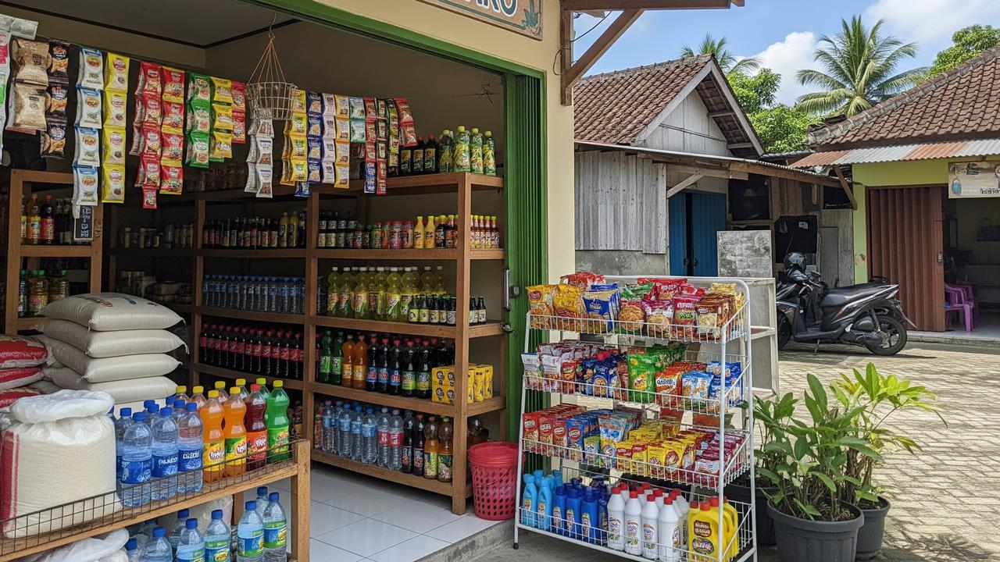
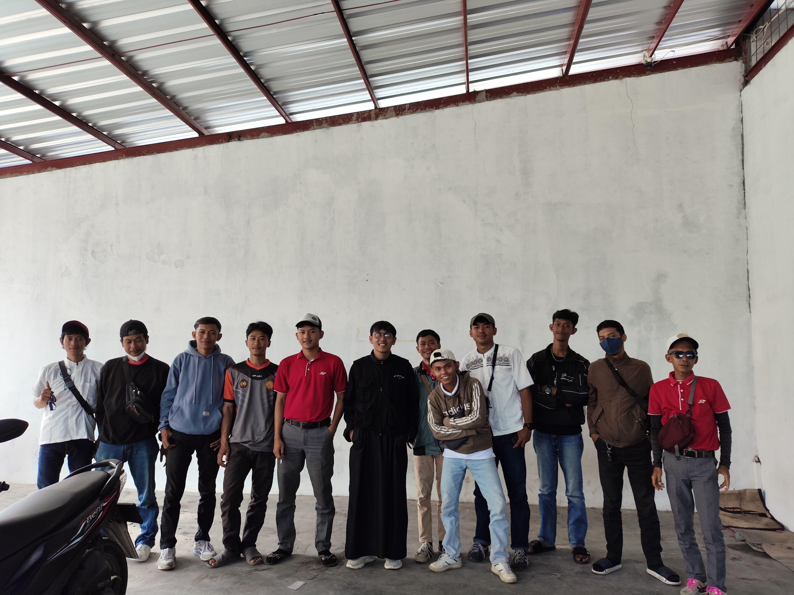
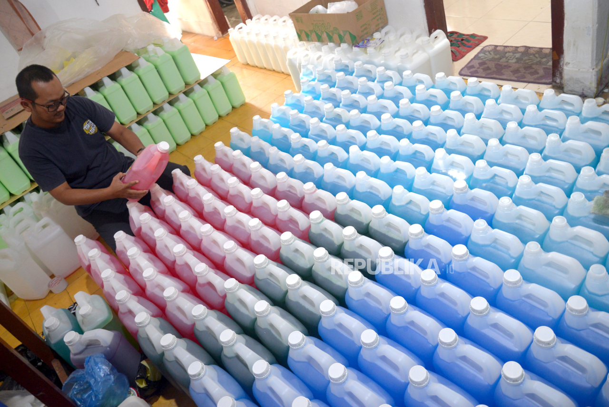

Ibnu Haidir. J
Saya adalah seorang |
Tentang Saya
Saya merupakan Lulusan SMA Negeri 1 Tamansari dengan jurusan Ilmu Pengetahuan Sosial dan lulus tahun 2023. Memiliki pengalaman Bekerja sebagai Store Crew Magang, Freelance J&T Express sebagai jasa pengiriman , dan Helper UMKM Produk Sabun sebagai bagian Produksi dan Distributor terhadap konsumen atau pembeli. dan memiliki rekam jejak dalam menjaga standar kepuasan pelanggan melalui kedisiplinan, ketelitian, kemampuan adaptasi yang cepat di berbagai lingkungan kerja, memiliki kemauan dan giat yang tinggi dalam mempelajari Ilmu atau hal baru terkait pekerjaan, dan mampu bekerja dibawah tekanan dan waktu serta mampu menyesuaikan dengan berbagai kebijakan perusahaan untuk bisa berkontribusi dan menaikan value diri saya.
Full Resume & CV (PDF)
Dokumentasi resmi kompetensi, kualifikasi silat, dan riwayat operasional kerja.
Pendidikan & Prestasi
Riwayat instansi pendidikan dan pencapaian akademik & non-akademik.
.png)
Pengalaman Kerja

Magang Toko Sembako
Periode: Juni 2023 - Agustus 2023
Menangani operasional ritel, pengelolaan kasir bulanan, dan pelayanan pelanggan.

Freelance — J&T Express
Periode: 2023 - 2026
Mengatur alur rantai distribusi logistik paket berskala besar harian dengan ketepatan waktu tinggi.

Helper Produksi Sabun
Periode: 2025 - 2026
Melakukan Produksi sabun, melakukan kuality control, dan melakukan pengemasan serta pengiriman kepada pembeli.
Galeri Karya Drone
Kumpulan hasil dokumentasi visual sinematik dan pemetaan lanskap menggunakan drone profesional.
Cinematic Shot 1
Dokumentasi udara lanskap sunset dramatis dengan resolusi tinggi.
Cinematic Shot 2
Eksplorasi pergerakan kamera drone (camera movement) pada area perbukitan.

Mountain Sunset
Komposisi fotografi lanskap pegunungan pada kondisi pencahayaan rendah (golden hour).

Golden Hour / Mapping
Pengambilan sudut pandang tegak lurus untuk keperluan analisis wilayah dan infrastruktur.
Hubungi Saya
Punya proyek, dokumentasi drone, atau peluang kerja sama? Hubungi saya langsung!